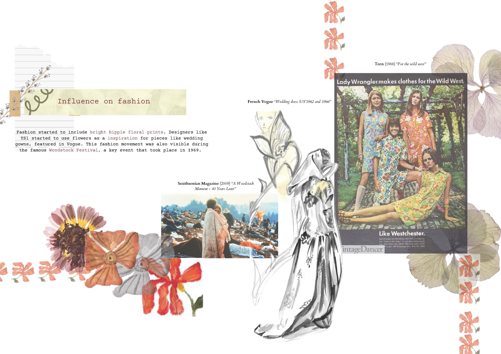
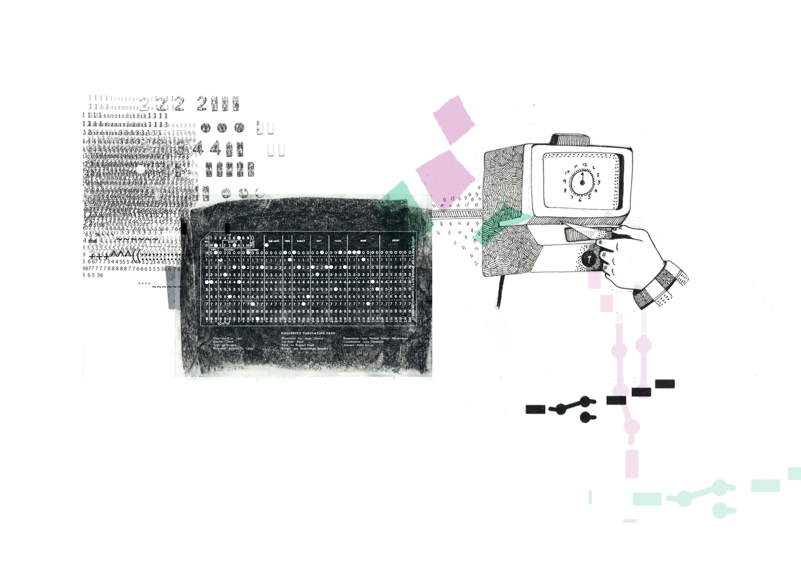
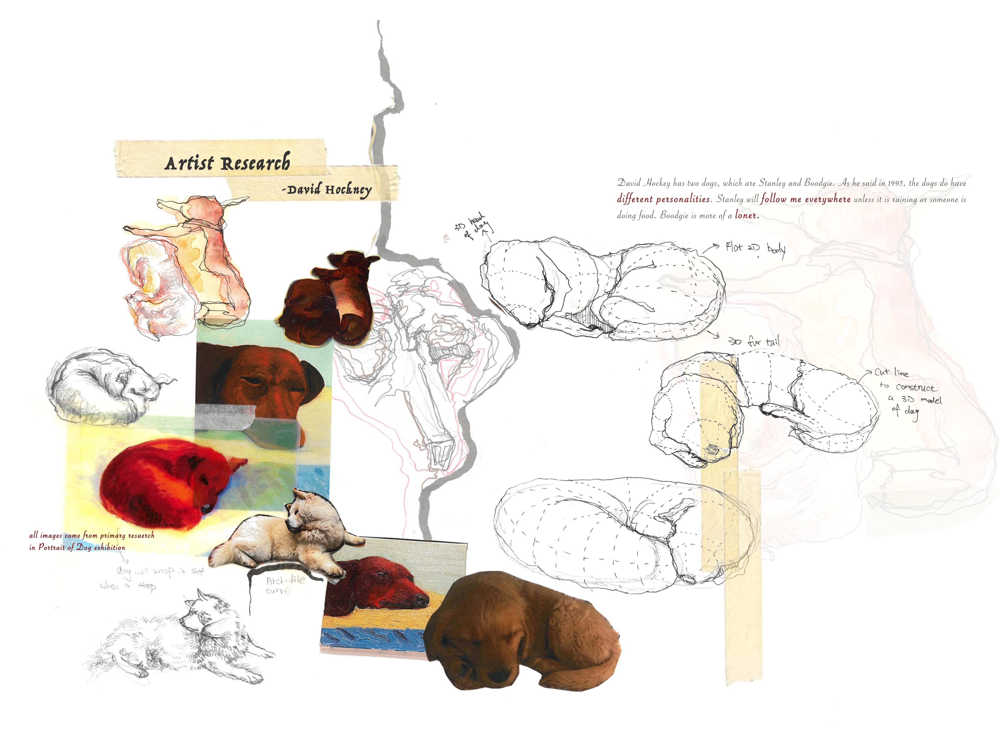
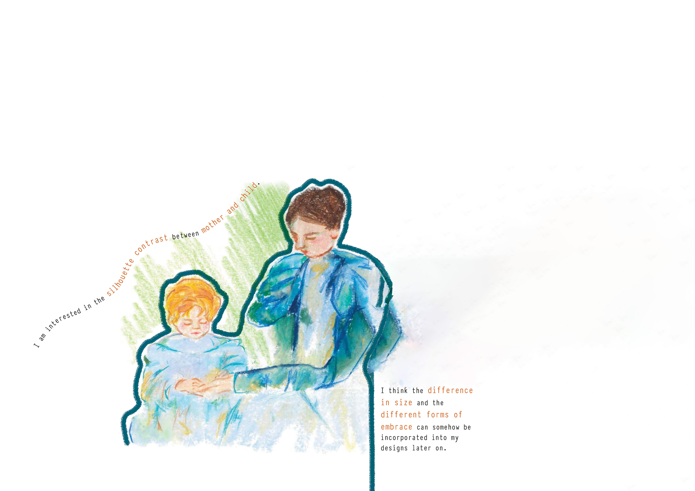
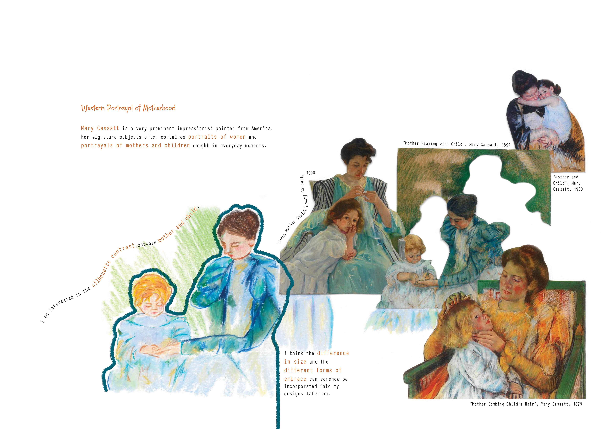
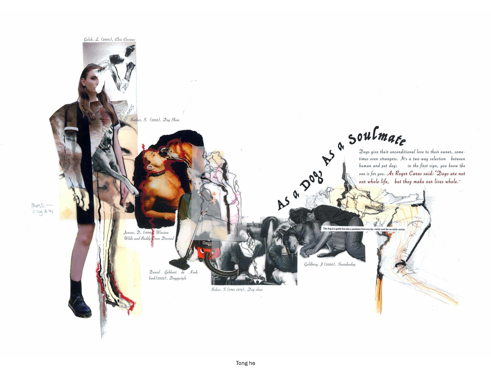
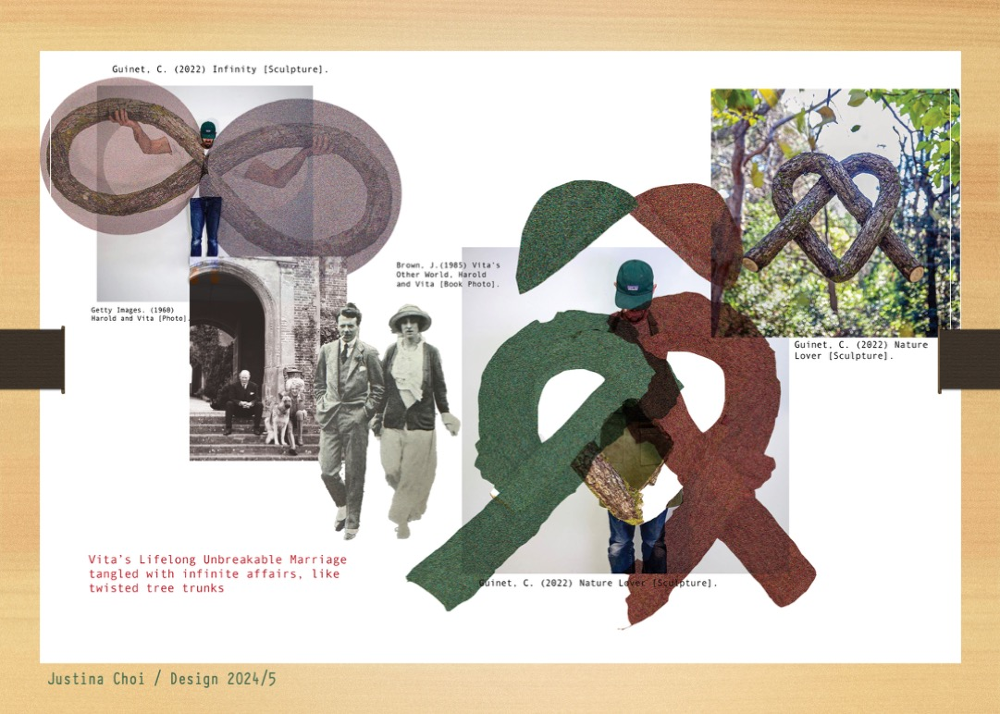

Research Page Development
Adding Secondary Research with Factual Content & Digital Integration
Workshop Structure (2.5 hours)
TASK 1 (45 mins)
Find secondary image, write quote & reference
TASK 2 (75 mins)
Apply digital skill to integrate into scanned A3
TASK 3 (30 mins)
Progress report: challenges & learning
🎯 Today's Learning Objectives
By the end of this lesson, you will have:
- Added a new secondary research image to support your project theme
- Written a subtitle that clearly articulates your area of research focus
- Included factual information with a properly formatted quote and reference
- Applied a digital skill to integrate this content into a scanned A3 physical page
- Documented your process and challenges in a progress report
Why This Matters
Research pages are the foundation of your portfolio. They demonstrate your ability to investigate, understand, and articulate ideas. Vague subtitles like "Textures" or "Colours" tell the examiner nothing about your specific research focus. Strong research pages include factual content that shows genuine understanding.

Research Page Example: Pritika Ahuja
Shows: Clear subtitle • Secondary image • Factual text with quote • Harvard reference • Digital integration
A strong research page combines physical work with digitally integrated secondary research, proper referencing, and specific subtitles.
Choose Your Digital Skill
Before starting, review the skills from previous workshops. You'll choose ONE technique to use in Task 2 when integrating your research into your scanned A3 page.
📚 Quick Reference: Previous Workshop Skills
+💡 Decision Point
Take a moment now to decide:
- Which research page in your portfolio needs additional secondary research?
- Which digital skill from the list above will you use to integrate your new content?
Time Allocation: 45 Minutes
Research & find image: 15 mins → Write subtitle & quote: 15 mins → Format reference & upload: 15 mins
What You Need to Do
Find a secondary research image that supports and expands on your existing research page. This should add depth to your investigation, not simply repeat what you already have.
Writing a Strong Subtitle
Your subtitle must clearly articulate your specific area of research focus — not a vague label.

Weak Research Page
Vague subtitle • No quote • No reference • Random image placement
Missing: specific focus, factual content, proper attribution

Strong Research Page
Specific subtitle • Relevant quote • Harvard reference • Purposeful layout
Includes: clear research direction, evidence of understanding, proper citation
📚 Harvard Referencing Format
For your image reference:
Artist's Last Name, First Initial. (Year). Title of the work [Image].
Example:
van Herpen, I. (2019). Hypnosis Collection [Image].
For your quote:
"Quote text here" (Author's Last Name, Year, p. Page Number).
Example:
"Fashion should be a form of escapism, and not a form of imprisonment" (McQueen, 2010, p. 45).
Task 1 Workflow
Search for an image that:
- Relates to and expands your existing research theme
- Comes from a credible source (artist website, museum, academic source)
- Has clear attribution information (artist name, year, title)
Good sources: Museum websites, artist portfolios, academic journals, design archives
Create a subtitle that clearly states what aspect of your research this image represents. Ask yourself: "If someone only read this subtitle, would they understand my specific focus?"
Write 2-3 sentences of factual content about your image/research area. Include at least one quote from a relevant source. This should demonstrate understanding, not just description.
Write the Harvard reference for your image and for any quotes you've included. Double-check the format against the examples above.
Upload your secondary image along with your subtitle, factual content, quote, and references to Padlet. Add your name as the title.
📤 Upload Task 1
Upload your secondary image with subtitle, factual content (including quote), and Harvard reference.
Upload to Padlet →Time Allocation: 75 Minutes
Scan A3 page: 10 mins → Apply digital skill: 50 mins → Refine & export: 15 mins
What You Need to Do
Take your physical A3 research page (or a page in progress), scan it, and digitally integrate your new secondary image, subtitle, quote, and reference using a digital skill from the workshop series.
BEFORE: Scanned Physical Page: Siying Lu

Your scanned A3 page with physical work
AFTER: Digitally Enhanced: Siying Lu

Physical + Digital: Secondary image, subtitle, quote & reference integrated
📋 Before You Start, Make Sure You Have:
- Your secondary image saved to your computer
- Your subtitle written and ready
- Your factual content and quote typed up
- Your Harvard reference formatted correctly
- A physical A3 page to scan (or existing scan)
- Decided which digital skill you will use
Digital Skill Application Examples

Threshold Example
High contrast image integrated with Multiply blend mode

Text on Path Example
Subtitle following a curve or shape element

Generative Fill Example
AI-created visual background for subtitle text

Detail Enlargement Example
Key detail from research image scaled as focal point
Task 2 Workflow
If you haven't already, scan your physical research page at 300 dpi. Save as TIFF or high-quality JPEG.
If you already have a scanned page or are working digitally, open your existing file.
Open your scanned page in Photoshop. Create new layers for:
- Your secondary image
- Your subtitle text
- Your factual content and quote
- Your reference
Keeping elements on separate layers gives you flexibility to adjust positioning and effects.
Now apply the digital skill you chose from the Quick Reference guide. For example:
- Threshold effect on your secondary image for high contrast
- Text on path for your subtitle to follow a curve or shape
- Generative Fill to create a visual background for your subtitle
- Layer masks & blend modes to integrate image with existing page
- Enlarged detail from your image as a focal point
- Custom brush created from your research to add graphic elements
Refer to the workshop guide for your chosen skill if you need a refresher on the technique.
Add your subtitle, factual content, quote, and reference to the page. Remember typography guidelines:
- Body text: 12-14pt maximum
- Subtitles: Different style, not just bigger size
- References: Can be smaller (9-10pt) and placed near the image
Review your page for visual balance and readability. Make adjustments as needed.
Export as:
- PSD — Save your working file with layers
- JPEG (300 dpi) — For upload and portfolio
💡 Integration Tips
- Your digital additions should enhance the physical page, not overwhelm it
- Consider how the new elements relate visually to existing content
- Use consistent colour palette between physical and digital elements
- The subtitle should be clearly readable — don't sacrifice legibility for style
📤 Upload Task 2
Upload your completed integrated A3 page showing your physical work combined with digital elements.
Upload to Padlet →Time Allocation: 30 Minutes
Take screenshots: 10 mins → Write reflection: 15 mins → Upload: 5 mins
What You Need to Do
Document your process from today's lesson. This progress report captures not just what you created, but what challenges you faced and what you learned. This reflective practice is essential for developing as a designer.

Progress Report Template
Before screenshot • After screenshot • Challenges faced • Solutions tried • What you learned
Your progress report should visually show your journey and honestly reflect on your learning process.
Your progress report should visually show your journey and honestly reflect on your learning process.
Task 3 Workflow
Capture screenshots showing:
- Your original scanned A3 page (before digital work)
- Key stages of your digital integration process
- Your final completed page
Mac: Command (⌘) + Shift + 3 or Command (⌘) + Shift + 4 for selection
Windows: Windows + Shift + S
Use the Progress Documentation Tool to compile your screenshots and write your reflection notes.
Answer these questions in your progress report:
- What digital skill did you use? Name the technique and workshop it came from.
- What challenges did you face? Be specific — technical difficulties, creative decisions, time management.
- How did you overcome them? What solutions did you try? What worked?
- What did you learn? New skills, insights about your research, discoveries about your process.
- What would you do differently? If you had more time or did this again, what would you change?
Export your progress report as JPEG from the documentation tool. Upload to Padlet with your name as the title.
💡 Reflection Tips
- Be honest about challenges — struggles are part of learning, not failures
- Be specific — "I found it hard" is less useful than "I struggled to blend the digital text with the hand-drawn elements because..."
- Connect to future work — how will what you learned today help you in upcoming lessons?
- Include before/after images — visual evidence of your progress is powerful
📤 Upload Task 3: Progress Report
Upload your completed progress report with screenshots and reflection.
✅ End of Lesson Checklist
Before you leave, confirm you have uploaded all three tasks to Padlet:
- Task 1: Secondary image with subtitle, quote, and Harvard reference
- Task 2: Completed integrated A3 page (scanned physical + digital elements)
- Task 3: Progress report with screenshots, challenges faced, and learning reflection
📅 Coming Up in Lesson 2
Next lesson will focus on design development pages — applying digital skills to show the relationship between 2D and 3D ideas in your portfolio.
Before next lesson: Review your design development pages and identify which ones need strengthening.